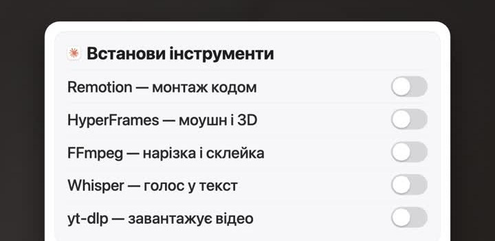
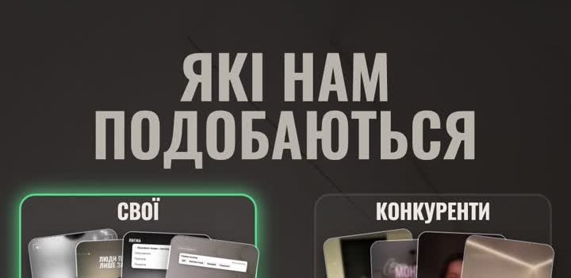
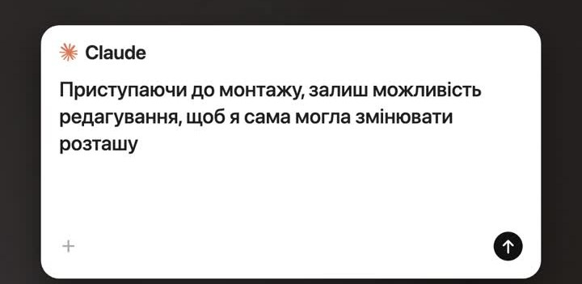
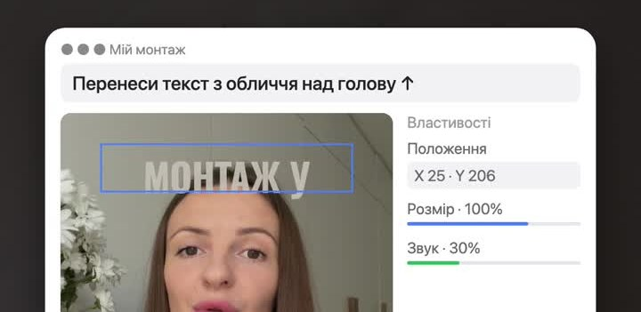

Монтаж Reels у Claude — від вихідника до готового ролика
Без CapCut і без монтажера. Саме так змонтований мій ролик «Монтаж у Claude».
Що знадобиться: платна підписка Claude (Pro або Max) і застосунок Claude на компʼютері (Mac або Windows) з вкладкою Code. Ваше сире відео з телефона і 3–10 роликів, монтаж яких вам подобається.
Крок 1
Встановіть інструменти
Claude монтує не «кнопками», а кодом. Тому йому потрібні інструменти для монтажу. Їх він ставить сам — просто попросіть:

Скопіюйте в Claude
Встанови мені інструменти для монтажу відео: Remotion (монтаж кодом), HyperFrames (моушн і 3D), FFmpeg (нарізка і склейка), Whisper (голос у текст), yt-dlp (завантаження відео). Після встановлення перевір, що все працює, і коротко напиши, що де лежить.
Якщо Claude питає дозвіл щось встановити — дозволяйте. Це робиться один раз.
Крок 2
Покажіть приклади, які вам подобаються
Завантажте від 3 до 10 роликів: свої найкращі або конкурентів, у яких подобається монтаж. Claude розбере стиль і запамʼятає його.

Скопіюйте в Claude
Ось приклади монтажу, які мені подобаються. Розбери стиль кожного: титри (шрифт, розмір, де стоять), субтитри, зуми, переходи, вставки, темп склейок, музика. Зведи це в один «мій стиль монтажу» і збережи, щоб наступного разу монтувати так само.
Ролики конкурентів можна просто дати посиланням — Claude сам завантажить їх через yt-dlp.
Крок 3
Дайте сире відео і попросіть змонтувати
Закидаєте відео так, як зняли: з паузами, дублями, з усім. І обовʼязково на першому монтажі просіть залишити можливість редагування — тоді ви самі зможете рухати деталі.

Скопіюйте в Claude
Змонтуй це відео в моєму стилі монтажу. Виріж паузи, дублі й зайві слова, додай субтитри на весь ролик, зуми на ключових словах і великий титр-хук у перші 3 секунди. Формат 9:16. Приступаючи до монтажу, залиш можливість редагування, щоб я сама могла змінювати розташування елементів.
Крок 4
Правте словами
Подивіться результат і просто напишіть, що змінити. Як редактору, тільки він робить це за хвилину.

«Перенеси текст з обличчя над голову»
«Зроби субтитри більшими і жовтими»
«Музику тихіше на 30%»
«Тут вставку прибери, залиш мене в кадрі»
Крок 5
Збережіть як свій скіл
Коли результат подобається — попросіть зберегти весь процес. Наступного разу ви просто пишете «змонтуй у моєму стилі» і закидаєте відео.
Скопіюйте в Claude
Збережи весь цей процес як скіл «Мій монтаж Reels»: стиль, налаштування, порядок дій і мої правки. Щоб наступного разу я писала тільки «змонтуй у моєму стилі» і давала відео.
Перший монтаж з налаштуванням займає 20–40 хвилин. Далі — кілька хвилин на ролик.
Хочете, щоб я налаштувала це під вашу нішу?
Монтаж — це супер, але без системи результату не буде. На діагностиці 30 хвилин подивимось вашу сторінку і що з контенту можна віддати Claude: сценарії, монтаж, каруселі, воронки.